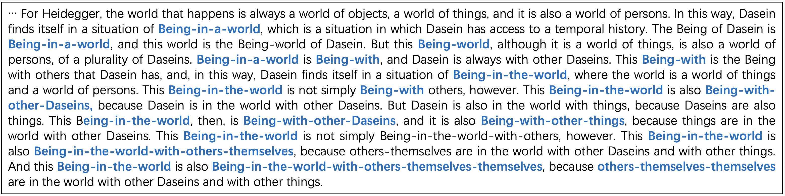

Agent Dynamics
Long-form generation and agent loops are not sequences of independent predictions. They are non-stationary dynamical processes driven jointly by internal states, memory, tool feedback, and observations. We study why their trajectories become unstable, whether measurable critical signals precede failure, and how low-rank online interventions can restore state-space accessibility.
Keywords state space · geometric collapse · phase transitions · criticality · online control
From Local Prediction to Long-Horizon Dynamics
An autoregressive model computes a next-token distribution at each step, yet its long-term behaviour depends on the entire history. Local probabilities may remain smooth while the trajectory drifts into repetition, semantic stagnation, or a locked policy. This separation of scales is why token entropy and repetition rates do not answer a more basic question: can the model still reach a sufficiently rich set of internal states?
Long-horizon failure is rarely triggered by one conspicuous error. A small history-dependent bias can accumulate under recursive decoding, because the state produced at one step becomes the condition for the next. When this bias grows along a few slowly decaying directions, locally plausible predictions can converge to a macroscopic loop. Perplexity and surface diversity observe projections of the trajectory; they cannot distinguish low-randomness progress from a genuine loss of internal degrees of freedom.
In generative models, the KV cache is a growing high-dimensional state. In an agent loop, the state also includes working memory, plans, tool outputs, and environmental observations. The technical problem is therefore to construct comparable trajectories from heterogeneous, non-stationary variables and to separate ordinary fluctuations, gradual degeneration, and transitions between attractors.
Geometric Collapse and State-Space Accessibility
Our ICML 2026 paper reframes mode collapse as a decline in state-space accessibility. When generation degenerates, the internal trajectory becomes confined to a low-dimensional metastable region. Correlation dimension estimates the number of effective degrees of freedom that remain active. Explicit loops, gradual loss of diversity, and premature convergence look different at the symbolic level but all coincide with a drop in trajectory dimension.
At each decoding step, the next-token log-probability vector supplies one point on a probability trajectory. A finite-time correlation dimension is estimated from the recurrence rate of trajectory points across distance scales. If new states continue to explore the accessible region, dimension remains high; if the trajectory repeatedly returns to a narrow region, the scaling slope of the correlation integral falls. Online updates compare only the newest state against the existing trajectory, reducing the per-step cost from naive quadratic accumulation to linear growth in the current length.
This formulation shifts the question from “which tokens repeat?” to “why have the internal dynamics lost accessible directions?” It also explains why modifying output probabilities alone may fail: the decoder changes the local choice while leaving the already-formed low-dimensional internal trajectory intact.

From Diagnosis to State Regulation
Correlation dimension diagnoses collapse but does not identify which state components to modify. A minimal dynamical model shows that, under low-temperature decoding, history-dependent bias can gradually dominate and pull the system into a low-dimensional region. Near the critical regime, the directions that determine long-term behaviour are not necessarily those with the largest instantaneous amplitude, but those that decay most slowly and therefore accumulate across the history.
Based on this observation, we introduce Reinforced Mode Regulation (RMR). A bounded generalized eigenvalue problem identifies a low-rank subspace with anomalous temporal persistence in the Transformer value cache, and selective damping is applied only along those directions. Block power iteration and orthogonalization avoid constructing dense high-dimensional matrices. The main costs are projection and orthogonalization, where the regulation rank is small. The intervention is inference-only and requires neither a repetition lexicon nor retraining.
Across several language models and low-entropy decoding conditions, standard decoding often collapses around an entropy rate of 2.0 nats/step; RMR extends stable generation to 0.8 nats/step. At temperature 0.7, the non-collapse rate rises from 8% to 56%; at target entropy 1.0, it rises from 5% to 33%. Coherence, syntax, and information progression do not significantly decline on samples that were already stable. Long-horizon stability can therefore be improved through internal-state regulation without generally increasing output randomness.
Phase Transitions, Criticality, and Early Warning
As temperature, entropy rate, and state damping vary, generation switches from continued progression to low-dimensional collapse, with thresholds, metastability, and abrupt trajectory reorganization. The minimal model interprets this as a critical transition in which persistent directions change from controlled fluctuations to dominant motion; RMR moves the stability boundary by weakening these slow modes.
The evidence suggests a phase-transition mechanism, but it is not yet a proof of a thermodynamic phase transition. The next step is to establish order parameters that transfer across models and test critical slowing down, increased variance and autocorrelation, hysteresis, and finite-size scaling. If these criteria hold, a decline in recovery rate and concentration of spectral energy should precede visible repetition.
Correlation dimension, spectral concentration, and recurrence rate can then serve as online observables. A controller could trigger state damping, memory refresh, or replanning as their joint signal changes. The objective is not to suppress all fluctuations, but to move the instability threshold while preserving task capability.
Extension to Agent Systems
Long-form generation is a controlled minimal system; agents extend the same problem to open environments. Tool outputs re-enter the context, faulty plans may become consolidated in memory, and multi-agent feedback can produce synchronization, competition, and collective attractors. State dimensionality changes over time, while environmental input makes the dynamics non-stationary.
Our current direction is to generalize correlation dimension and spectral persistence to hierarchical states: language, memory, and tool interaction are measured separately before their coupling is analysed. Applications include monitoring long-context generation, warning of planning lock-in, detecting ineffective tool loops, and regulating states without restarting a task. Existing results concern inference-time intervention; how training shapes the slow modes remains open.
Related Paper
Xin Du and Kumiko Tanaka-Ishii. Escaping Mode Collapse in LLM Generation via Geometric Regulation — paper overview. ICML 2026. arXiv